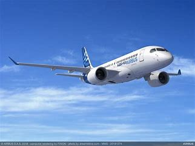

Founded: December 18, 1970, as Airbus Industrie GIE, rebranded as Airbus SE in 2015.
Headquarters: Legally registered in Leiden, Netherlands; main office in Blagnac, France.
Employees: Approximately 147,893 worldwide as of 2023.
Revenue: €65.45 billion in 2023.
Business Segments:
-Commercial Aircraft
-Defence and Space
-Helicopters
Type: Single-aisle narrow-body airliner.
Origins: Originally developed by Bombardier Aviation as the CSeries, rebranded as the A220 after Airbus acquired a majority stake in 2018.
Models: Two main variants - A220-100 (formerly CS100) and A220-300 (formerly CS300).
Seating Capacity:
A220-100: 108 to 133 seats.
A220-300: 130 to 160 seats.
Length:
A220-100: 35 meters (115 feet).
A220-300: 38.7 meters (127 feet).
Range: Up to 3,600 nautical miles (6,670 kilometers).
Engines: Pratt & Whitney PW1500G geared turbofan engines.
First Flight:
A220-100: September 16, 2013.
A220-300: February 27, 2015.
Entry into Service:
A220-100: July 15, 2016.
A220-300: December 14, 2016.
Notable Features:
Fly-by-wire flight controls.
Carbon composite wing.
Aluminium-lithium fuselage.
Optimized aerodynamics for better fuel efficiency.
Cabin: Designed for passenger comfort with wide seats, large windows, and spacious overhead bins.
Environmental Benefits: Lower fuel burn, reduced noise levels, and decreased emissions.
Production: Main assembly line in Mirabel, Quebec, and a second assembly line in Mobile, Alabama

Type: Single-aisle narrow-body airliner.
Family Members: A318, A319, A320, A321.
Seating Capacity: Typically seats 140 to 240 passengers, depending on the model and configuration.
Length:
A318: 31.44 meters (103 feet 2 inches).
A319: 33.84 meters (111 feet).
A320: 37.57 meters (123 feet 3 inches).
A321: 44.51 meters (146 feet).
Range:
A318: 3,200 nautical miles (5,930 kilometers).
A319: 3,750 nautical miles (6,950 kilometers).
A320: 3,300 nautical miles (6,150 kilometers).
A321: 3,400 nautical miles (6,300 kilometers).
Engines: Options include CFM56 or International Aero Engines (IAE) V2500 for older models, and CFM International LEAP-1A or Pratt & Whitney PW1100G for neo models.
First Flight: February 22, 1987.
Entry into Service: April 18, 1988, with Air France.
Notable Features:
Fly-by-wire flight controls.
Spacious cabin with wider seats and larger overhead bins.
Advanced aerodynamics and efficient engines for reduced fuel consumption.
Variants: Includes A320ceo (current engine option) and A320neo (new engine option) families.
Production: Manufactured in multiple facilities, including Toulouse, France; Hamburg, Germany; Mobile, Alabama; and Tianjin, China.
Market Presence: One of the best-selling aircraft families in the world, used by airlines globally for short to medium-haul routes.

Type: Wide-body twin-engine jet airliner.
Family Members: A330-200, A330-300, A330-800neo, A330-900neo.
Seating Capacity:
A330-200: Typically 210 to 250 passengers.
A330-300: Typically 250 to 300 passengers.
A330-800neo: Typically 220 to 260 passengers.
A330-900neo: Typically 260 to 300 passengers.
Length:
A330-200: 58.82 meters (193 feet).
A330-300: 63.66 meters (209 feet).
A330-800neo: 58.82 meters (193 feet).
A330-900neo: 63.66 meters (209 feet).
Range:
A330-200: Up to 7,250 nautical miles (13,421 kilometers).
A330-300: Up to 6,350 nautical miles (11,760 kilometers).
A330-800neo: Up to 8,150 nautical miles (15,094 kilometers).
A330-900neo: Up to 7,200 nautical miles (13,334 kilometers).
Engines: Options include Rolls-Royce Trent 700, General Electric CF6, or Pratt & Whitney PW4000 for older models, and Rolls-Royce Trent 7000 for neo models.
First Flight:
A330-200: August 13, 1997.
A330-300: November 2, 1992.
A330-800neo: November 6, 2018.
A330-900neo: October 19, 2017.
Entry into Service:
A330-200: April 1998 with Korean Air.
A330-300: January 1994 with Air Inter.
A330-800neo: 2020 with Kuwait Airways.
A330-900neo: December 2018 with TAP Air Portugal.
Notable Features:
Fly-by-wire flight controls.
Composite materials for reduced weight.
Efficient engines for lower fuel consumption.
Advanced aerodynamics and cabin comfort.
Variants: Includes freighter and MRTT (Multi Role Tanker Transport) versions.
Production: Manufactured in Toulouse, France.
Type: Wide-body twin-engine jet airliner.
Family Members: A350-900, A350-1000, A350F (freighter).
Seating Capacity:
A350-900: Typically 300 to 350 passengers.
A350-1000: Typically 350 to 410 passengers.
Length:
A350-900: 66.8 meters (219 feet 2 inches).
A350-1000: 73.8 meters (242 feet 5 inches).
Range:
A350-900: Up to 8,000 nautical miles (14,816 kilometers).
A350-1000: Up to 8,700 nautical miles (16,112 kilometers).
Engines: Rolls-Royce Trent XWB.
First Flight:
A350-900: June 14, 2013.
A350-1000: November 24, 2016.
Entry into Service:
A350-900: January 15, 2015, with Qatar Airways.
A350-1000: February 20, 2018, with Qatar Airways.
Notable Features:
Advanced materials (53% composites, titanium, and modern alloys) for reduced weight.
Aerodynamic design including wing morphing technology.
New generation engines for better fuel efficiency.
High levels of passenger comfort with wider seats and advanced air conditioning systems.
Variants:
A350F: The freighter version designed for air cargo operations.
Cabin: Quietest twin-aisle cabin, with features like in-flight entertainment, mood lighting, and large windows.
Environmental Benefits: Lower carbon emissions and reduced noise footprint.
Production: Manufactured in Toulouse, France.
Type: Wide-body double-deck, four-engine jet airliner.
Family Members: A380-800 (main passenger variant).
Seating Capacity: Typically 555 in a three-class configuration, up to 853 in an all-economy class configuration.
Length: 72.7 meters (238 feet 7 inches).
Wingspan: 79.75 meters (261 feet 8 inches).
Range: Up to 8,000 nautical miles (14,800 kilometers).
Engines: Options include Rolls-Royce Trent 900 or Engine Alliance GP7200.
First Flight: April 27, 2005.
Entry into Service: October 25, 2007, with Singapore Airlines.
Notable Features:
Largest passenger airliner in the world.
Double-deck design with spacious cabins.
Quiet and efficient with advanced aerodynamics and materials.
Onboard amenities such as showers, bars, and lounges (depending on airline configuration).
Production: Final assembly in Toulouse, France; additional production in Hamburg, Germany.
Environmental Benefits: Lower emissions per passenger compared to smaller aircraft.
Retirement: Airbus announced the end of A380 production in 2021, with the last delivery in 2021. However, many are still in service around the world.